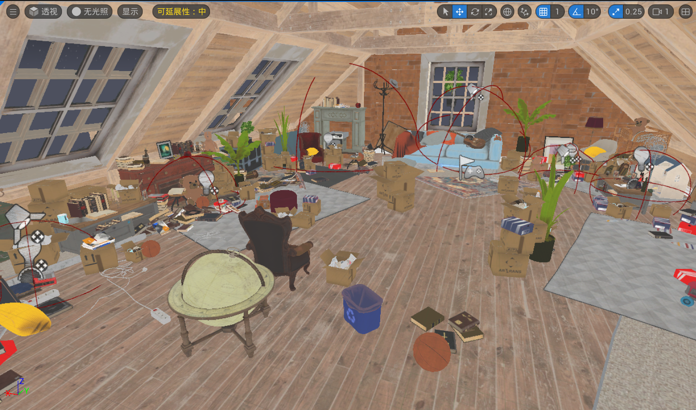
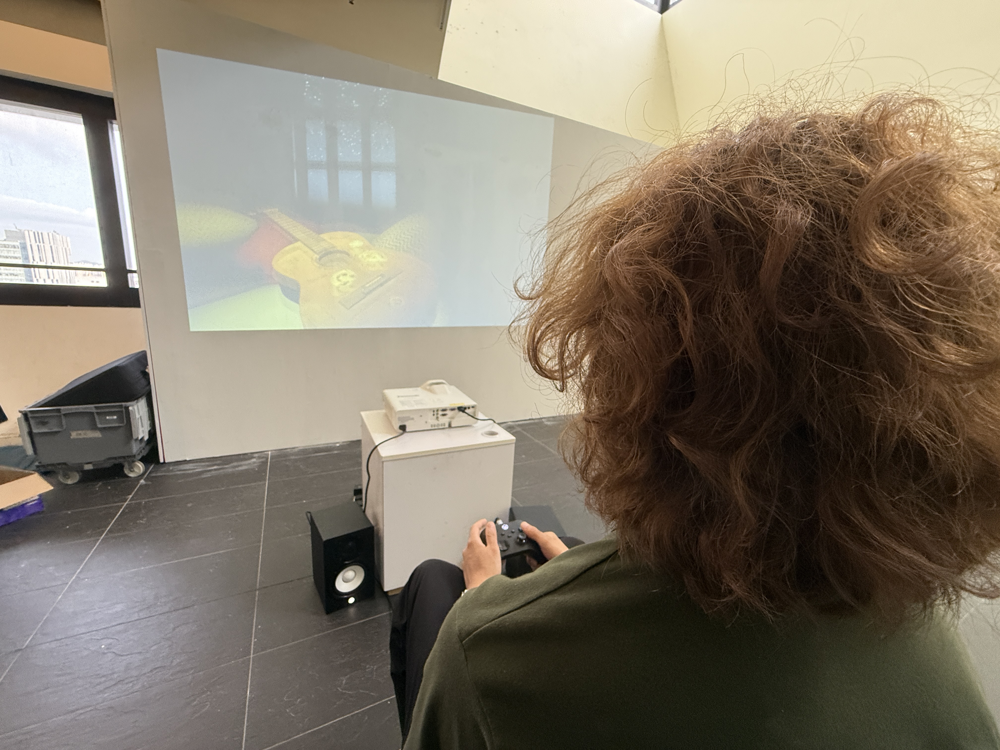
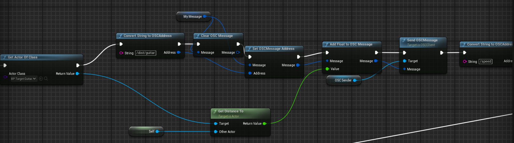
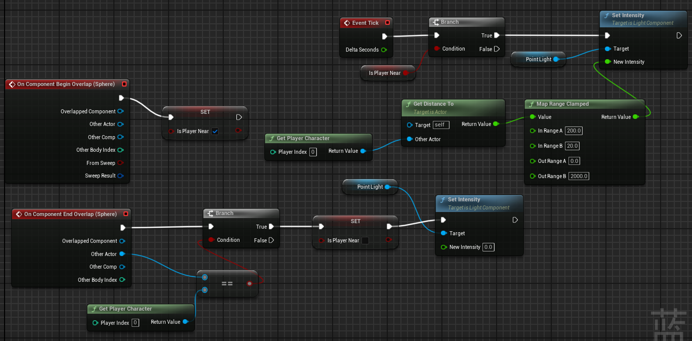
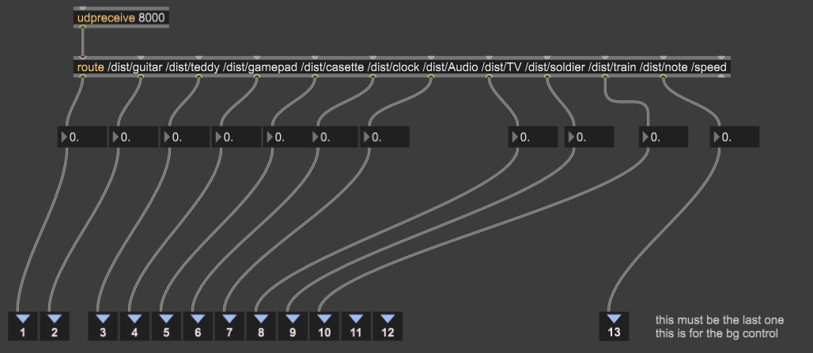
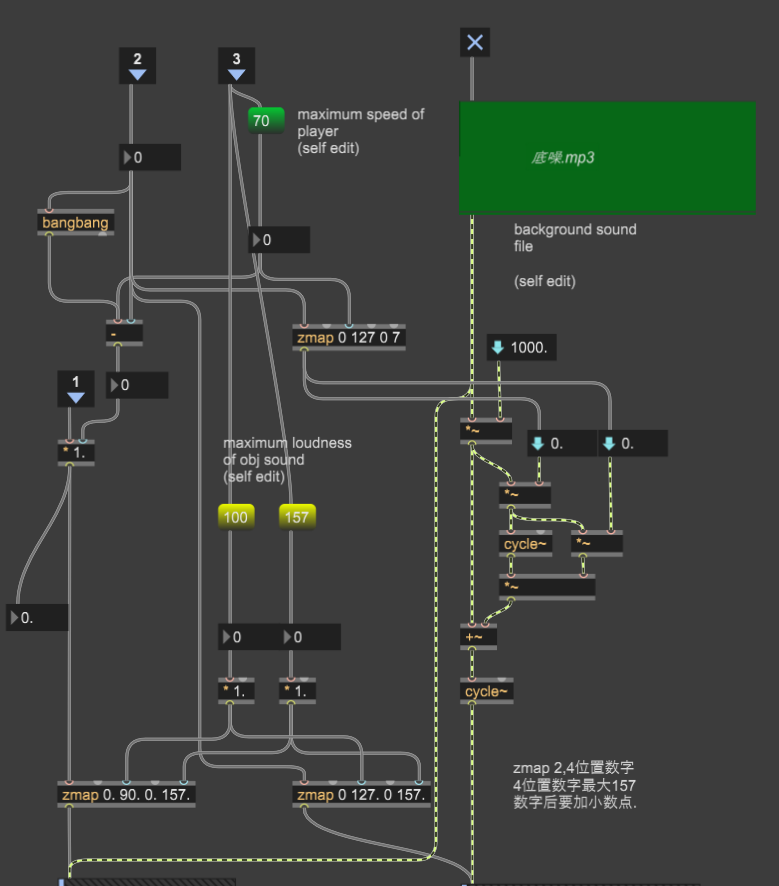
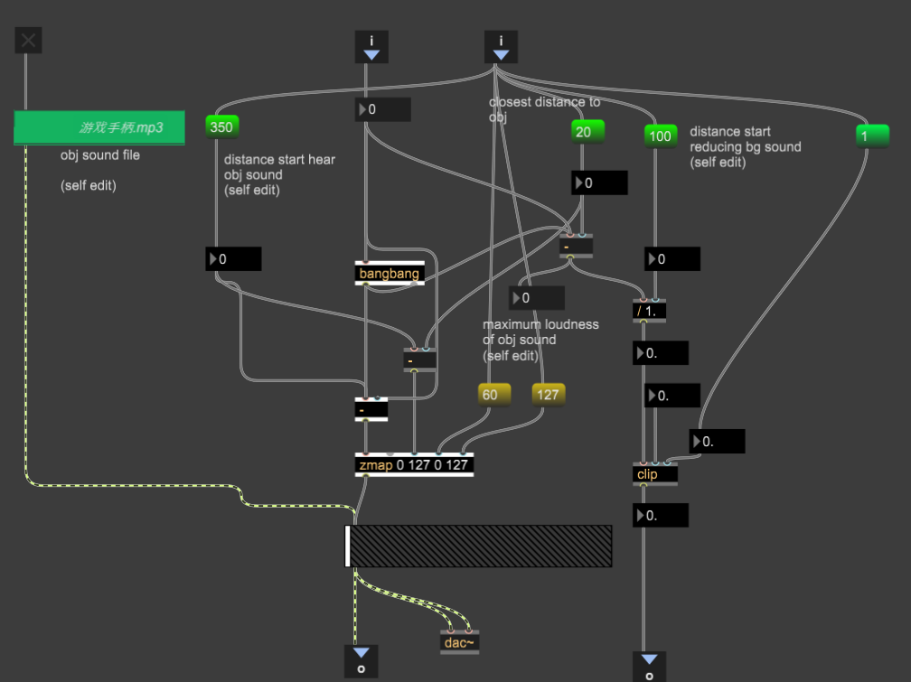

"The Attic" is an interactive sound experience about exploring childhood memories. We materialized the process of human recollection as fumbling in a dark attic. Memories are often fragmented and blurred, just like the objects in this near-pitch-black environment (e.g., an old music box, a toy train) that initially sound like a chaotic mass.
In this experience, the player's "movement" generates an anxious background noise, metaphorically representing the hustle and anxiety of the adult world. "Stillness" is the only way to brush away the dust. When players stop moving, they can navigate through the darkness following faint sounds. By perceiving distance through hearing, the harder a player tries to get closer, a specific sound of memory will peel away from the chaos and become increasingly clear.
In the early stages of creating "The Attic", our background research focused on three dimensions: noise and silence in sound art, memory metaphors in spatial psychology, and sensory deprivation-based interactive experiences.
Our core sound philosophy was deeply inspired by avant-garde musician John Cage. In his famous "4'33"" and anechoic chamber experiments, Cage proposed that absolute "silence" does not exist in this world; what we call silence is merely when we begin to hear subtle sounds we normally ignore. In modern, fast-paced society, people's minds are constantly occupied by various anxious "information noises". Therefore, we set a mechanism: the player's "movement" (symbolizing anxiety and busyness) actively triggers global distortion noise. We wanted to express that tranquility does not exist naturally; it can only be attained when the experiencer actively stops rushing to filter out the worldly noise.
For scene design, we believe the "attic" is the perfect physical metaphor for storing memories. Located at the very top of a house, dark, dusty, and usually ignored, it resembles the subconscious areas deep within the human brain. When experiencers fumble in the near-pitch-black attic, they are actually searching for forgotten childhood fragments within their own subconscious. Each object (like a wooden train or a music box) carries a specific time and space, and the volume attenuation caused by distance perfectly simulates the psychological process of memory shifting from blurry to clear.
In traditional interactive media, "vision" often dominates, making sound a mere accessory. To maximize the artistic tension of hearing, we researched pure-audio-driven works like Blindscape. We decided to employ extreme "visual restraint" in Unreal Engine 5 (UE5), removing most lighting and keeping only extremely faint starlight to outline silhouettes. This mild "Sensory Deprivation" forces experiencers to abandon their reliance on eyes and concentrate all their attention on their auditory radar, thereby greatly amplifying the immersion and emotional impact of finding a specific sound.
To fully immerse experiencers in the sonic narrative, our virtual scene design and physical exhibition layout followed the principles of "minimalism and visual deprivation," striving for unity between virtual and physical experiences.

During the UE5 scene construction, we deliberately deleted conventional global illumination components like the Sky Sphere and Directional Light to create a near-pitch-black attic environment. Logically, we placed the 10 memory objects (e.g., guitar, clock) evenly around the edges of the room. This physical layout has clear sound experience considerations: when players are in the center, they are far from all objects, and all sounds intertwine into an even, blurry, chaotic noise; but when players grope in the dark and hit a wall, the physical boundary collision guides them to follow the edges, discovering specific hidden memories one by one.

For the physical exhibition, we used a projector, dual-channel speakers, and a game controller to build the interactive physical space. Since the game interior is extremely dark, if the outside light is too bright, the projection would be a meaningless black screen; thus, the physical exhibition space had to be kept highly dark. This compromise fostered a wonderful artistic effect: the darkness of physical and virtual spaces overlapped, breaking the screen boundaries and greatly enhancing the immersion of being in a dark attic.
For interactive devices, we used a controller for movement. As our concept stated "movement is anxiety," we modified the joystick's Response Curve at the engine level. Experiencers must push the joystick extremely slowly and restrainedly to tip-toe through the dark. This physical "micro-control resistance" of the fingers perfectly resonates with the psychological caution of exploring in the dark.
In "The Attic", sound is not an environmental accessory but the core narrative carrier and navigation tool. To build this childhood memory space, we carefully collected and processed 10 nostalgic childhood sound effects and 1 global background audio (assets mainly sourced from Freesound and Pixabay).
To ensure the assets didn't sound like modern, clean "canned sound effects," but rather fit the hazy, story-filled, vintage tone of "attic memories," we deeply processed all audio in Audacity. Our primary audio processing techniques included:
(Please interact with the clips below to hear the processed memory fragments)
The core technical challenge was translating the player's physical behavior in 3D space into dynamic audio mixing parameters in real-time. We built a dual-end communication system based on the OSC (Open Sound Control) protocol, using Unreal Engine 5 for spatial data collection and Max/MSP for real-time algorithmic mixing.
Instead of complex spatial audio plugins, we used Blueprints to extract core player behaviors as control signals:

Event Tick, we calculate the Distance between the Player Character and the 10 memory objects in real-time, along with the player's current Velocity (Vector Length XY). These floats are packaged into OSC messages with specific addresses (e.g., /dist/guitar, /speed) and sent to Max/MSP via local port 8000.
Sphere Overlap range, it triggers a hidden Point Light. Using a Map Range Clamped node, the closer the player is, the stronger the light intensity. This "faint light turning on with sound" mechanism provides a weak but crucial physical anchor for dark exploration.Max/MSP acts as the "master mixing board", translating cold numbers into emotional sound experiences.

udpreceive 8000, we use the route object to separate the distances of 10 objects and the player's speed. For the 10 memory object tracks, we built an inverse mapping logic (zmap): as the received distance decreases, the Loudness of the corresponding track is gradually raised.
pak and zl.sort nodes to identify the closest object. As the player approaches this target, the system raises its volume and simultaneously attenuates the global Background Sound, achieving auditory clarity.
/speed) directly to the background sound's Modulation and Audio Gain parameters. When the player moves quickly (restlessly), higher velocity values trigger intense algorithmic modulation, producing uncomfortable metallic and chaotic distortion noises. This auditory negative feedback instinctively forces the player to slow down or stop, perfectly matching the theme of "forced to stop amidst the noise."The development of "The Attic" was a deliberate rebellion against "traditional interactive game design." In most modern games and interactive media, "vision" dominates, and players rely heavily on lighting, UI, and visual cues, while sound is often a supplementary accessory. We asked: If visual dominance is stripped away, relying solely on sound, can we still build emotion and narrative in virtual space?
Therefore, our core design philosophy was "extreme visual restraint." We removed all unnecessary lighting, using only faint starlight and proximity lights as extremely limited aids. This challenged early testers who felt lost in the dark. However, through physical speed limits in the engine (forcing players to slow down) and precise distance radar algorithms in Max/MSP (background noise fades and memory sounds emerge upon approach), we successfully established a "pure auditory navigation system."
The final exhibition proved our hypothesis: when experiencers are forced to abandon visual reliance, their auditory senses are infinitely amplified. The calmness achieved from fumbling through dark anxiety to finally hear a crisp "music box" or "train whistle" cannot be replaced by any gorgeous high-definition graphics. This is not just a dual-end communication technical experiment, but an artistic exploration of rediscovering the essential experience of sound.
Artistic Context:
Technical Context:
Audio Assets: